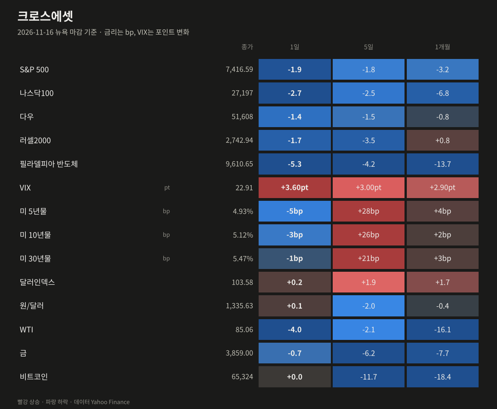
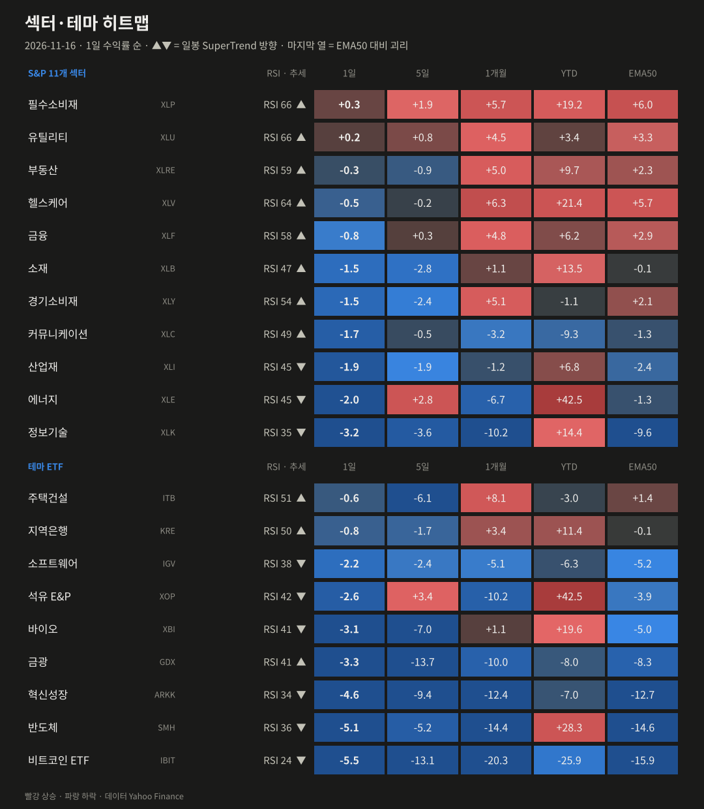
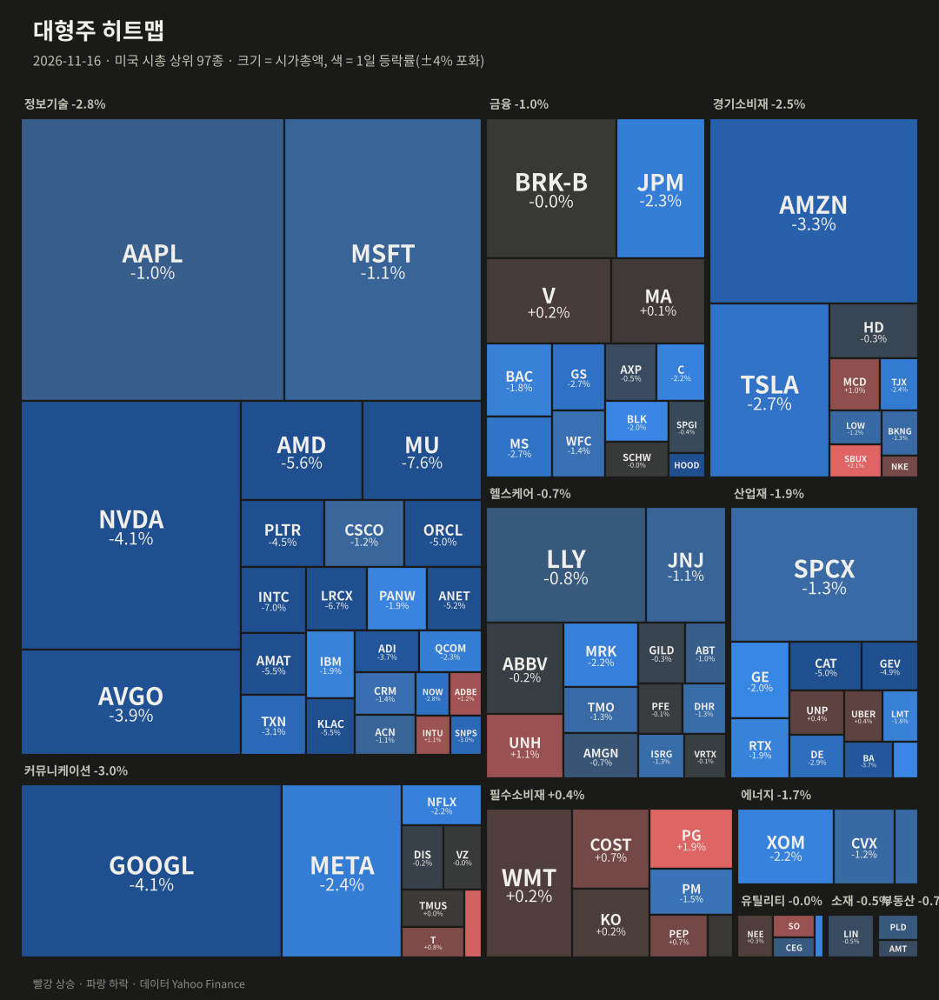
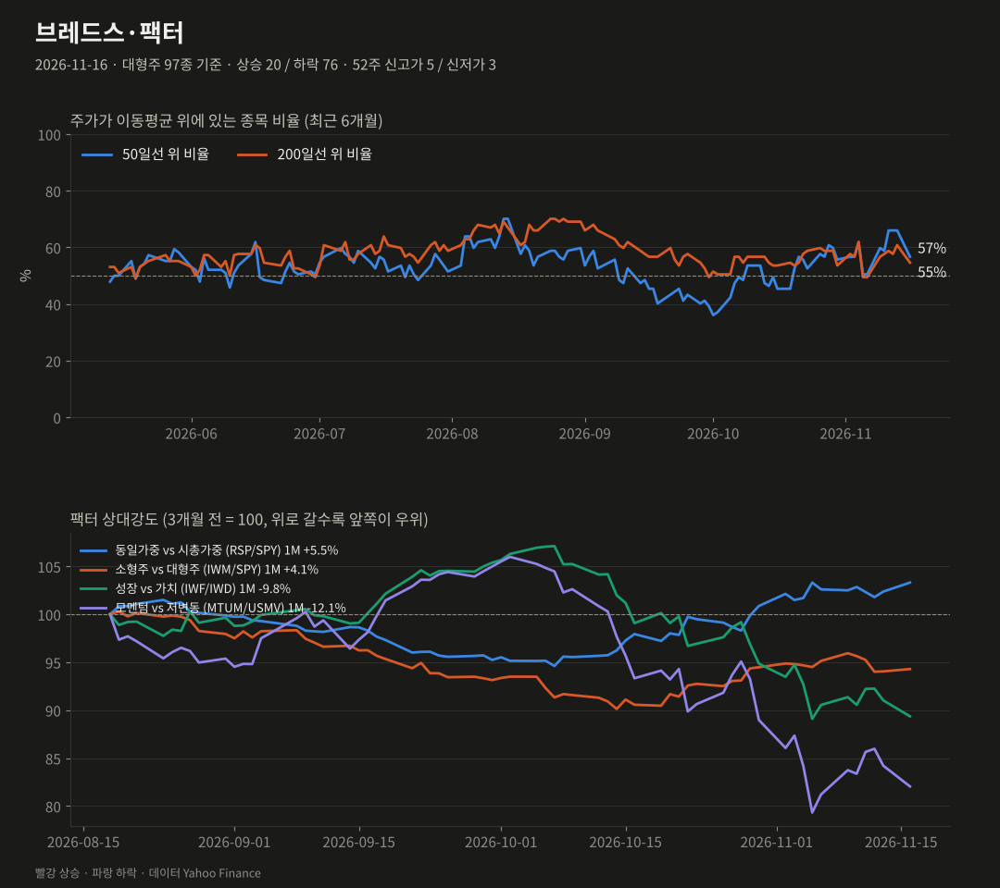
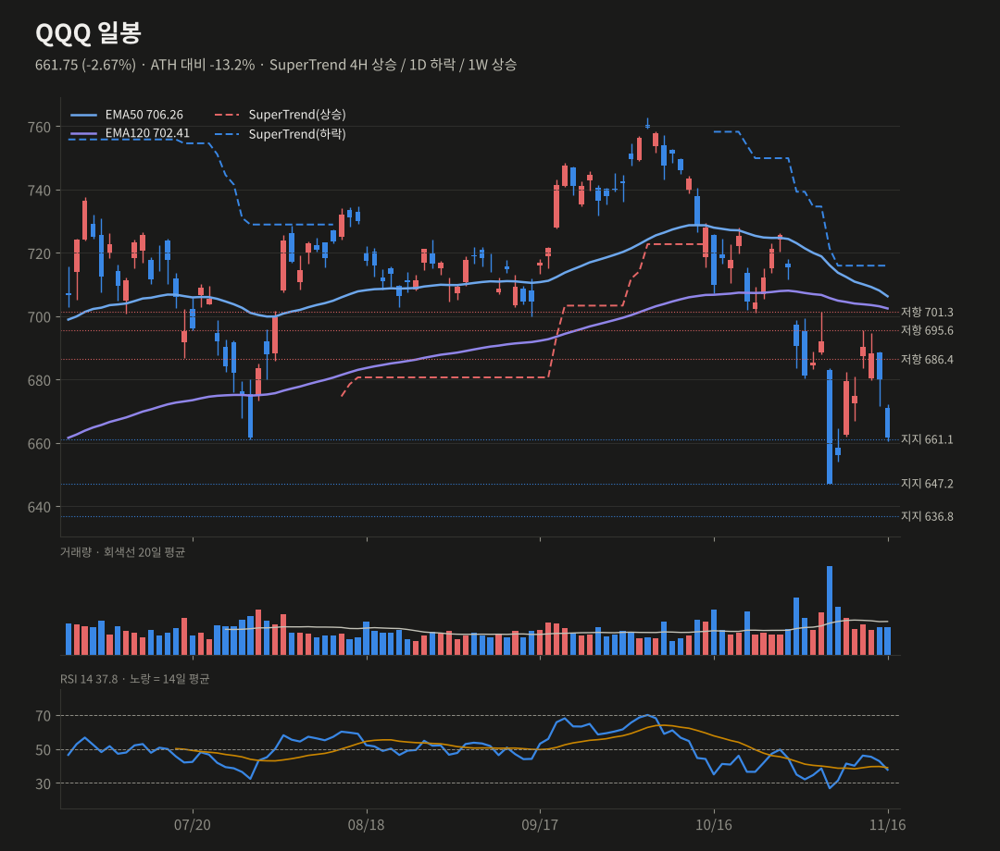
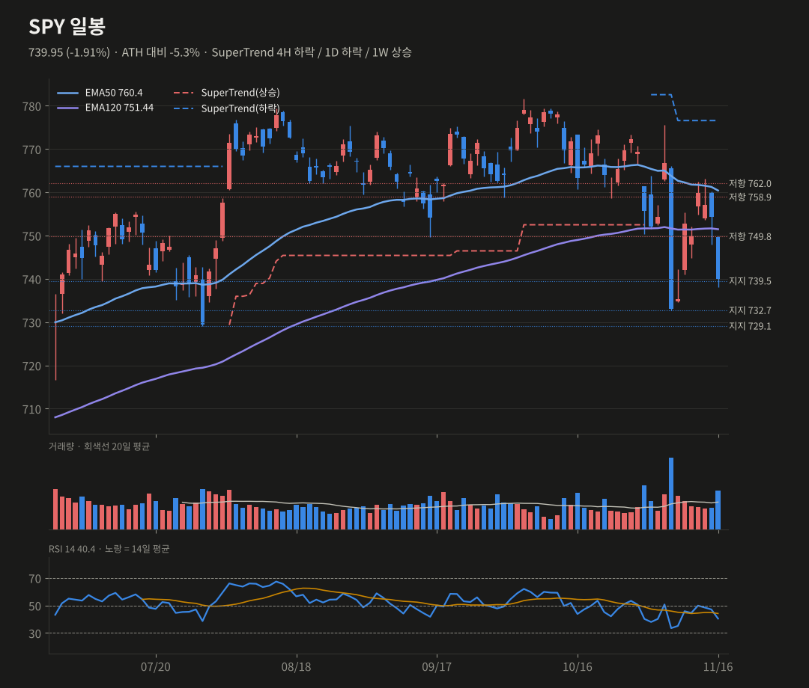
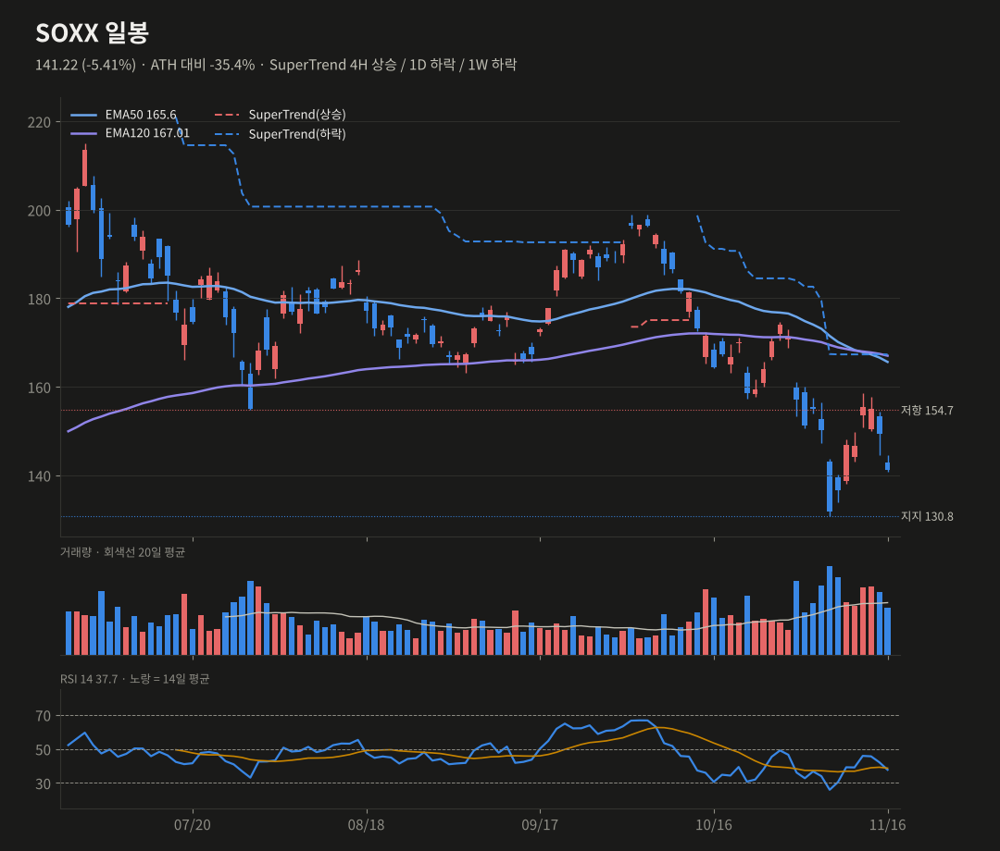
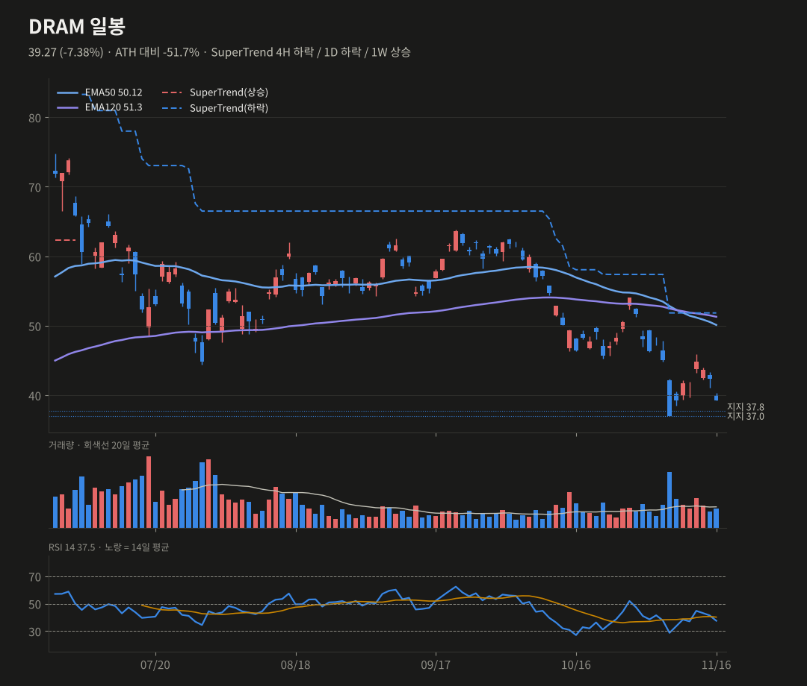

미증시 마감 브리핑
11/16(월) 뉴욕 마감 기준 · 생성 2026-11-17 07:45 KST
엔비디아 실적(11/17)을 앞두고 반도체가 다시 무너졌어요(SOX −5.3%). 나스닥100 −2.7%, S&P −1.9%이고, 내린 종목이 76개였어요.
S&P 5007,416.59-1.92%
나스닥10027,197-2.67%
다우51,608-1.41%
러셀20002,742.94-1.70%
반도체(SOX)9,610.65-5.28%
VIX22.91+3.60pt
미 10년물5.12%-3.30bp
원/달러1,335.63+0.14%
요약
- 반도체 SOX −5.3%, 나스닥100 −2.7%였어요. 내린 종목이 76/97로 매도가 폭넓었어요.
- 칩 원격 접근 규제안과 엔비디아 실적 경계가 겹쳤어요. VIX는 22.9예요.
- SPY는 일봉 EMA120을 다시 이탈했어요. QQQ 661, SPY 739.5가 지지선이에요.
- 오늘 밤 소매판매, 내일 새벽 06:20(KST) 엔비디아 실적이 분수령이에요.
종합 판단
엔비디아 실적이 이번 반도체 조정의 분수령이에요. CEO 공백, 수출통제 강화, AI 투자 회수 논쟁이 한꺼번에 가격에 반영된 상태라 실적·가이던스에 따라 변동성이 클 거예요. 지수는 QQQ 661, SPY 739.5 지지선 위에서 버티고 있어요. 하지만 SPY 일봉 EMA120 재이탈과 주봉 모멘텀 약화로 스윙 확률을 한 단계씩 낮췄어요.
엔비디아 실적이 이번 반도체 조정의 분수령이에요. CEO 공백, 수출통제 강화, AI 투자 회수 논쟁이 한꺼번에 가격에 반영된 상태라 실적·가이던스에 따라 변동성이 클 거예요. 지수는 QQQ 661, SPY 739.5 지지선 위에서 버티고 있어요. 하지만 SPY 일봉 EMA120 재이탈과 주봉 모멘텀 약화로 스윙 확률을 한 단계씩 낮췄어요.
무엇이 시장을 움직였나
- 반도체·메모리 급락: MU −7.6%, INTC −7.0%, LRCX −6.7%, AMD −5.6%, KLAC −5.5%였어요. 엔비디아의 첫 실적(CEO 사임 이후) 발표를 앞두고 포지션 축소가 이어졌어요.
- 정책 리스크: 상무부가 첨단 칩의 원격 접근 규제안을 내놨어요. 해외 데이터센터를 통한 수출통제 우회를 막는 내용으로, 중국 기업이 해외에서 엔비디아 연산력을 임차하는 경우가 대상이라는 보도예요.
- 가상자산 약세: HOOD −7.5%, 비트코인 ETF −5.5%, 혁신성장 −4.6%였어요. 비트코인은 6.5만 달러에서 보합이에요.
- WTI가 −4.0%(85.1달러) 내려 에너지는 −2.0%였고, 필수소비재와 유틸리티만 올랐어요. 10년물은 5.12%(−3.3bp), VIX는 22.9(+3.6pt)예요.

| 자산 | 종가 | 1일 | 5일 | 1개월 |
|---|---|---|---|---|
| S&P 500 | 7416.59 | -1.92% | -1.77% | -3.17% |
| 나스닥100 | 27197.15 | -2.67% | -2.55% | -6.82% |
| 다우 | 51608.17 | -1.41% | -1.49% | -0.76% |
| 러셀2000 | 2742.94 | -1.70% | -3.45% | +0.79% |
| 필라델피아 반도체 | 9610.65 | -5.28% | -4.22% | -13.71% |
| VIX | 22.91 | +3.60pt | +3.00pt | +2.90pt |
| 미 5년물 | 4.935 | -4.6bp | +27.6bp | +3.6bp |
| 미 10년물 | 5.121 | -3.3bp | +25.7bp | +2.3bp |
| 미 30년물 | 5.467 | -1.4bp | +21.1bp | +3.1bp |
| 달러인덱스 | 103.58 | +0.17% | +1.90% | +1.71% |
| 원/달러 | 1335.63 | +0.14% | -1.99% | -0.40% |
| WTI | 85.06 | -3.95% | -2.06% | -16.12% |
| 금 | 3859.0 | -0.70% | -6.21% | -7.70% |
| 비트코인 | 65323.62 | +0.03% | -11.68% | -18.35% |

| 섹터·테마 | 1일 | 5일 | 1개월 | YTD | RSI | 일봉 추세 |
|---|---|---|---|---|---|---|
| 필수소비재 XLP | +0.27% | +1.88% | +5.68% | +19.2% | 66 | 상승 |
| 유틸리티 XLU | +0.18% | +0.75% | +4.52% | +3.4% | 66 | 상승 |
| 부동산 XLRE | -0.27% | -0.87% | +4.96% | +9.7% | 59 | 상승 |
| 헬스케어 XLV | -0.51% | -0.24% | +6.32% | +21.4% | 64 | 상승 |
| 주택건설 ITB | -0.63% | -6.06% | +8.12% | -3.0% | 51 | 상승 |
| 지역은행 KRE | -0.76% | -1.72% | +3.41% | +11.4% | 50 | 상승 |
| 금융 XLF | -0.85% | +0.33% | +4.79% | +6.2% | 58 | 상승 |
| 소재 XLB | -1.46% | -2.78% | +1.08% | +13.5% | 47 | 상승 |
| 경기소비재 XLY | -1.53% | -2.36% | +5.06% | -1.1% | 54 | 상승 |
| 커뮤니케이션 XLC | -1.72% | -0.50% | -3.17% | -9.3% | 49 | 상승 |
| 산업재 XLI | -1.85% | -1.91% | -1.25% | +6.8% | 45 | 하락 |
| 에너지 XLE | -1.96% | +2.83% | -6.67% | +42.5% | 45 | 하락 |
| 소프트웨어 IGV | -2.16% | -2.42% | -5.12% | -6.3% | 38 | 하락 |
| 석유 E&P XOP | -2.61% | +3.35% | -10.18% | +42.5% | 42 | 하락 |
| 바이오 XBI | -3.10% | -7.02% | +1.08% | +19.6% | 41 | 하락 |
| 정보기술 XLK | -3.24% | -3.58% | -10.20% | +14.4% | 35 | 하락 |
| 금광 GDX | -3.29% | -13.68% | -9.99% | -8.0% | 41 | 상승 |
| 혁신성장 ARKK | -4.59% | -9.41% | -12.37% | -7.0% | 34 | 하락 |
| 반도체 SMH | -5.11% | -5.23% | -14.43% | +28.3% | 36 | 하락 |
| 비트코인 ETF IBIT | -5.52% | -13.07% | -20.28% | -25.9% | 24 | 하락 |

| 상승 상위 | 1일 | 거래량(20일 대비) | 하락 상위 | 1일 | 거래량 |
|---|---|---|---|---|---|
| SBUX | +2.14% | x1.0 | MU | -7.62% | x0.87 |
| PG | +1.90% | x1.3 | HOOD | -7.45% | x1.45 |
| CMCSA | +1.75% | x0.97 | INTC | -7.02% | x0.69 |
| ADBE | +1.20% | x0.97 | LRCX | -6.68% | x0.88 |
| INTU | +1.13% | x0.81 | AMD | -5.58% | x1.03 |
| SO | +1.12% | x1.64 | KLAC | -5.49% | x0.7 |

대형주 97종: 상승 20 / 하락 76 · 50일선 위 56.7% (전일 66.0%, 5일 전 59.8%) · 200일선 위 54.6% · 52주 신고가 5 / 신저가 3
오른 종목 20, 내린 종목 76으로 매도가 폭넓었어요. SMA50 위 종목 비율은 66.0%에서 56.7%로 하루 만에 떨어졌어요. 동일가중(RSP −1.0%)이 시총가중보다 0.9%p 덜 빠져 기술주 중심 매도예요.
| 팩터 스프레드 | 1일 | 5일 | 1개월 |
|---|---|---|---|
| 동일가중 vs 시총가중 (RSP/SPY) | +0.92% | +0.79% | +5.48% |
| 소형주 vs 대형주 (IWM/SPY) | +0.26% | -1.72% | +4.10% |
| 성장 vs 가치 (IWF/IWD) | -1.83% | -2.19% | -9.81% |
| 모멘텀 vs 저변동 (MTUM/USMV) | -2.56% | -2.03% | -12.09% |
기술적 분석 · 확률
TradingView 설정과 맞춘 지표(EMA50·EMA120, SuperTrend ATR20×4, RSI14, MACD 12/26/9). 확률은 차트 기반 추정치예요.
QQQ 661.75 -2.67%
SuperTrend 4H 상승 / 1D 하락 / 1W 상승 · RSI 37.76
단기 반등 50% · 스윙 상승 30% (-5)
661.1 지지 바로 위(661.8)에서 마감했어요. 일봉 RSI 37.8이고, 일봉 MACD는 골든크로스 직전에서 다시 멀어졌어요(히스토그램 −0.84). 주봉 히스토그램 확대가 이어져 스윙을 낮췄어요. 주봉 SuperTrend(649.6)가 핵심 방어선이에요.
상방 671.3(주봉 EMA50) 회복 → 686.4
하방 661.1 이탈 → 649.6(주봉 SuperTrend), 636.8
SuperTrend 4H 상승 / 1D 하락 / 1W 상승 · RSI 37.76
단기 반등 50% · 스윙 상승 30% (-5)
661.1 지지 바로 위(661.8)에서 마감했어요. 일봉 RSI 37.8이고, 일봉 MACD는 골든크로스 직전에서 다시 멀어졌어요(히스토그램 −0.84). 주봉 히스토그램 확대가 이어져 스윙을 낮췄어요. 주봉 SuperTrend(649.6)가 핵심 방어선이에요.
상방 671.3(주봉 EMA50) 회복 → 686.4
하방 661.1 이탈 → 649.6(주봉 SuperTrend), 636.8
SPY 739.95 -1.91%
SuperTrend 4H 하락 / 1D 하락 / 1W 상승 · RSI 40.43
단기 반등 45% (-5) · 스윙 상승 35% (-5)
일봉 EMA120(751.4)을 다시 이탈했고, 4H MACD도 데드크로스예요. 거래량은 평균의 1.45배였어요. 739.5 지지 위에서 마감했어요. 주봉 SuperTrend(705.4)와 EMA50(724.9)은 아직 아래에 여유가 있어요.
상방 749.8 회복 → 751.4(EMA120), 758.9
하방 739.5 이탈 → 732.7, 724.9(주봉 EMA50)
SuperTrend 4H 하락 / 1D 하락 / 1W 상승 · RSI 40.43
단기 반등 45% (-5) · 스윙 상승 35% (-5)
일봉 EMA120(751.4)을 다시 이탈했고, 4H MACD도 데드크로스예요. 거래량은 평균의 1.45배였어요. 739.5 지지 위에서 마감했어요. 주봉 SuperTrend(705.4)와 EMA50(724.9)은 아직 아래에 여유가 있어요.
상방 749.8 회복 → 751.4(EMA120), 758.9
하방 739.5 이탈 → 732.7, 724.9(주봉 EMA50)
SOXX 141.22 -5.41%
SuperTrend 4H 상승 / 1D 하락 / 1W 하락 · RSI 37.72
단기 반등 45% (-5) · 스윙 상승 30% (-5)
−5.4%로 일봉 MACD 골든크로스가 무효가 됐어요(히스토그램 −0.02). 주봉 EMA50(151.2) 아래에서 하락폭을 키웠어요. 다음 지지는 130.8, 4H SuperTrend는 134.5예요. ATH 대비 −35%예요.
상방 151.2 회복 → 154.7
하방 134.5 이탈 → 130.8
SuperTrend 4H 상승 / 1D 하락 / 1W 하락 · RSI 37.72
단기 반등 45% (-5) · 스윙 상승 30% (-5)
−5.4%로 일봉 MACD 골든크로스가 무효가 됐어요(히스토그램 −0.02). 주봉 EMA50(151.2) 아래에서 하락폭을 키웠어요. 다음 지지는 130.8, 4H SuperTrend는 134.5예요. ATH 대비 −35%예요.
상방 151.2 회복 → 154.7
하방 134.5 이탈 → 130.8
DRAM 39.27 -7.38%
SuperTrend 4H 하락 / 1D 하락 / 1W 상승 · RSI 37.54
단기 반등 45% · 스윙 상승 25% (-5)
−7.4%로 주봉 EMA120(38.5)에 바짝 다가갔어요. 4H 거래량은 평균의 2.6배예요. 일봉 RSI 37.5로 과매도 직전이에요. 38.5를 주봉 종가로 지키는지가 상장 후 추세의 분기점이에요.
상방 41.5 회복 → 44.4
하방 38.5 이탈 → 37.0, 주봉 SuperTrend 29.4
SuperTrend 4H 하락 / 1D 하락 / 1W 상승 · RSI 37.54
단기 반등 45% · 스윙 상승 25% (-5)
−7.4%로 주봉 EMA120(38.5)에 바짝 다가갔어요. 4H 거래량은 평균의 2.6배예요. 일봉 RSI 37.5로 과매도 직전이에요. 38.5를 주봉 종가로 지키는지가 상장 후 추세의 분기점이에요.
상방 41.5 회복 → 44.4
하방 38.5 이탈 → 37.0, 주봉 SuperTrend 29.4




일정
- 11/17 10월 소매판매(08:30 ET)
- 11/17 장후 엔비디아 실적(16:20 ET, 한국 11/18 06:20)
- 12/8~9 FOMC
출처
- Stock Market Today Live, November 16, 2026: Tech Stocks Pull the Market Lower Before Nvidia's Results (StockTitan)
- Why Micron Stock Dove Today (Motley Fool)
- Nasdaq 100 Drops 2.29% as Chipmakers and Crypto-Linked Shares Retreat (TokenPost)
데이터 Yahoo Finance·Nasdaq. 색은 한국식(빨강 상승·파랑 하락). 투자 판단의 참고 자료예요. 지난 브리핑